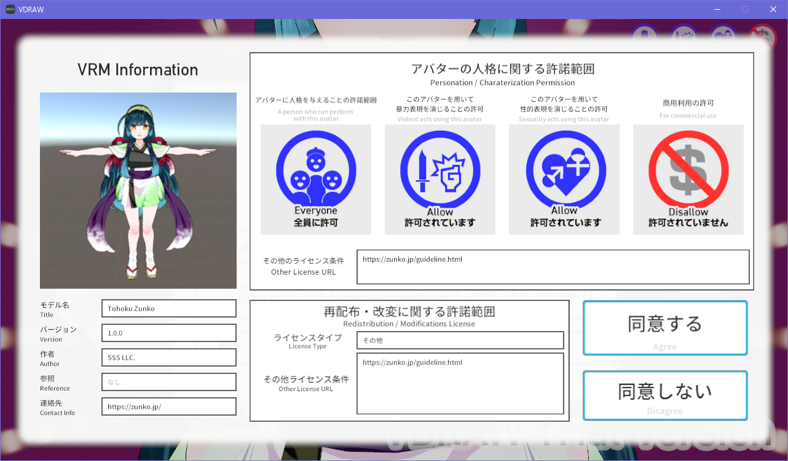

## <div style="border: thin solid; border-radius: 8px; padding: 8px; background: white;"><font color="midnightblue">How to<br>オンライン勉強会への<br>バ美肉参加</font></div> <span style="font-size:60%;">[【タガヤス その16】「テレワーク」と「マイクロサービス化」のお話](https://tagayas.connpass.com/event/181184/)(2020/07/28)</font> @furandon_pig<br> <span style="font-size:60%;">https://furandon-pig.github.io/study-memo/docs/tagayas/20200728.html</span>
### 自己紹介 * [@furandon_pig](@furandon_pig) * IwateDevelopersMeetupのSlackから来ました
# テレワーク。
## オンライン会議 * マイクON →わかる。 * カメラON →？？ * オンライン会議 * [在宅でもスーツ](https://www.businessinsider.jp/post-217335) 😯
### とはいえリアクションは重要 * 「聴衆の反応」は必要かつ重要 * でもカメラON、スーツONはちょっと...
# 🤔
# バ美肉。
### バ美肉とは？ * 「バーチャル美少女受肉」の略。 * [バ美肉](https://ja.wikipedia.org/wiki/%E3%83%90%E7%BE%8E%E8%82%89)(Wikipedia) > <span style="font-size:40%">美少女のアバターを纏うこと、あるいは、纏ったうえでサイバースペース（バーチャル空間）の美少女として、VRChat等のサイバースペースで活動したり、バーチャルYouTuber、バーチャルアイドルなどとして活動することを指す。</span> > <br> <span style="font-size:50%;text-align:right;">Wikipedia「バ美肉」より引用</span>
### でもお高いんでしょう？(スペックが) 4,5年くらい前のPCスペックでも(一応は)大丈夫。 * Windows10 * メモリ8GB * Core i5-6200U * Intel HD-Graphics 520
### さっそくバ美肉してみる 必要なデータ・ツール。 * VRMデータ * VRMビューア * 仮想Webカメラ
### VRMデータ * VRM * VR向け3Dアバターファイルフォーマット * プラットフォーム非依存のファイル形式 * [一般社団法人 VRMコンソーシアム](https://vrm-consortium.org/) * [VRMドキュメント](https://vrm.dev/) * 「人型3Dアバター」というイメージでOKです
### VRMビューア * [VDRAW](https://booth.pm/ja/items/939389) * まずはTrial Versionで試してみる * [BOOTH](https://booth.pm/ja)にて購入可能
### 仮想Webカメラ * [SCFH DSF](https://mosax.sakura.ne.jp/yp4g/fswiki.cgi?page=SCFH+DSF) * PC画面の一部をWebカメラの映像として取り込める
### VRMデータを入手する * [BOOTH](https://booth.pm/ja)にて購入可能 * フリーのVRMデータも公開されている * [東北ずん子公式VRM](https://booth.pm/ja/items/1050142)
### さっそくバ美肉してみる * VDRAW起動＋VRM読み込み * Zoomに接続 * (Zoomから)ビデオの設定 * SCFH DSFでキャプチャする領域選択 * ZoomのカメラON
##### VDRAWを起動。
##### 注意事項を確認。
##### VDRAW起動画面。
##### VRMデータを読み込み。
##### VRMデータの許諾確認画面。 
##### VRMのライセンス確認。
##### スタイルの確認。
##### 無事表示できた！😃
##### Zoomのビデオで仮想Webカメラを設定する。
##### SCFH DSFでのデスクトップ映しこみ。
##### SCFH DSFで映しこむ領域の選択。
##### 領域選択ツール。
##### 領域サイズの選択。
##### 領域選択ボタン。
##### 映しこむ領域の選択。
##### Zoomのビデオに映りこみました！😃
##### あとはZoomのビデオをONにするだけ。
### これでバ美肉はバッチリ？ * バ美肉だけでなく、リアクションもほしい！ * VDRAWの機能を使えばOK😃
##### リアクションも可能です🥺
### まとめ * テレワークにおけるオンライン会議 * ビデオOFFでもリアクションしたい * バ美肉の手順を紹介 * VRM/VRMビューア * 仮想Webカメラ * Zoom
### ご清聴ありがとうございました😃